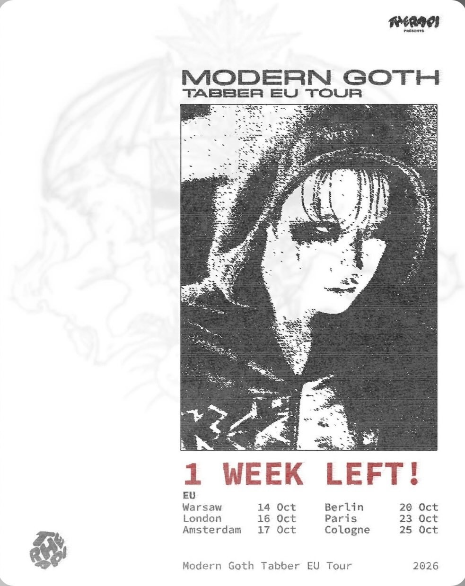
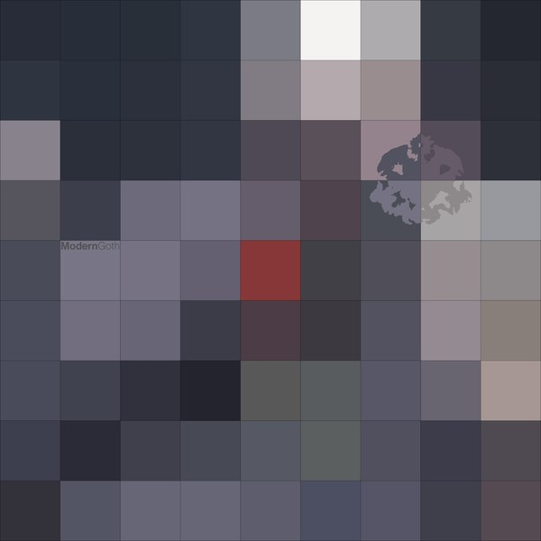
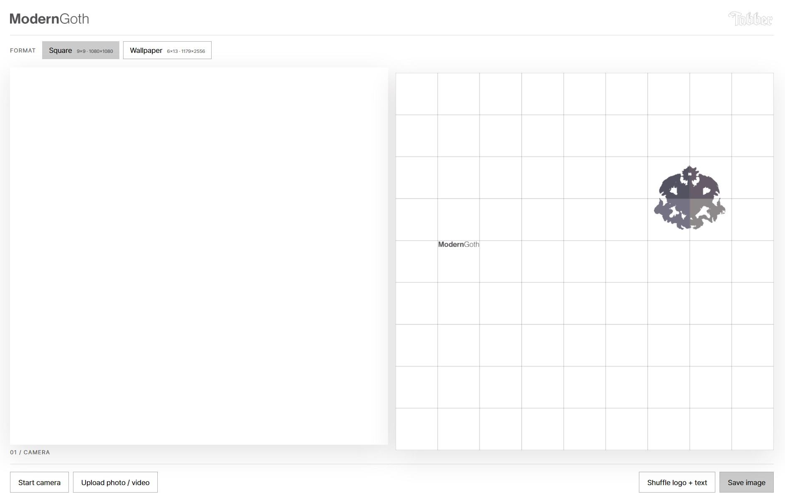
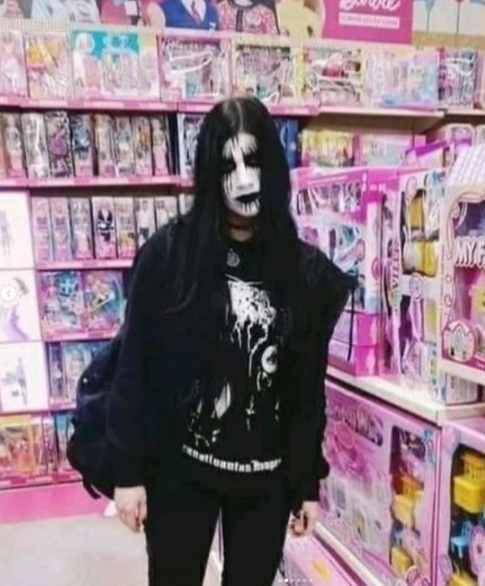
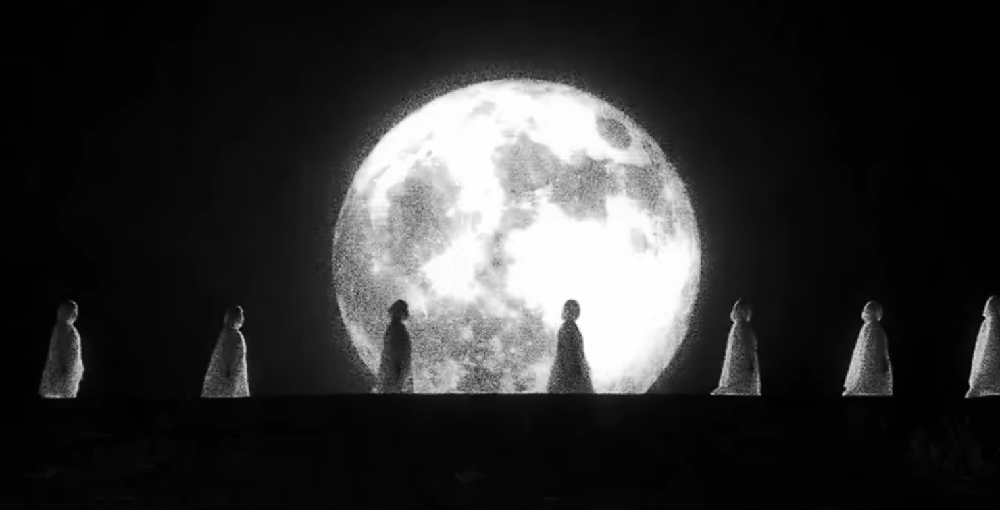
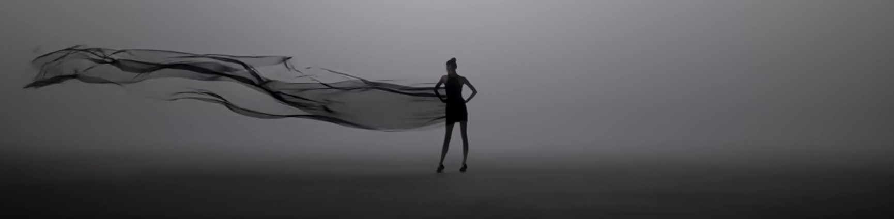
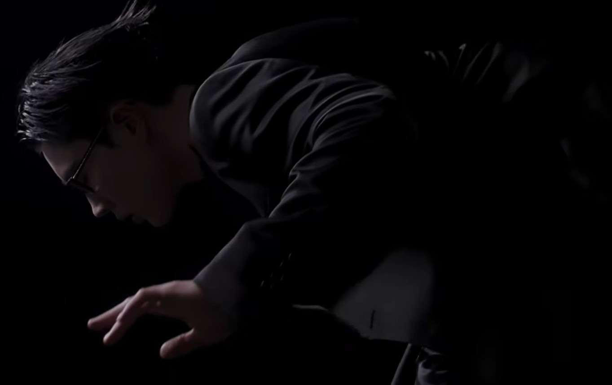

안녕하세요, 태버 님! HAUS OF MATTERS 인터뷰에 참여해 주셔서 감사드립니다. 독자분들께 간단한 자기소개 부탁드리겠습니다.
안녕하세요! R&B 음악을 하고 있는 태버라고 합니다.

현재 해외 투어를 진행하고 계신다고 들었어요. 현장의 분위기는 어떠한가요?
지금 이 인터뷰 답지를 쓰는 곳은 다섯 번째 공연이 진행된 파리예요. 앨범이 나온 지 얼마 되지 않았는데도 다 같이 즐겨 주셔서 감사한 마음이에요. 모든 도시가 기억에 남지만, 런던 팬분들의 환호가 제 예상보다도 훨씬 커서 놀랐어요.

3년 만에 새로운 EP [Modern Goth]를 발표하셨습니다. 앨범에 대한 간단한 소개 부탁드릴게요.
제가 느낀 요즘 사람들과 저의 심리 그리고 제가 바라본 현대의 세상을 담았어요. [Madness Always Turns to Sadness]가 저와 상대방 간의 이야기였다면, 이번엔 시선을 바깥으로 두고 작업해보았습니다.
먼저 타이틀에 담긴 ‘고스(Goth)’에 대해 이야기해보고 싶습니다. 태버 님이 생각하시는 고스는 어떤 분위기와 정서를 지닌 개념인가요?고 스는 패션을 비롯한 비주얼에서도 널리 사용되는 표현이잖아요. 태버 님에게 고스는 자신의 취향과 모습을 설명하는 말에 가까운지, 아니면 이번 작품을 통해 새롭게 탐구해보고 싶었던 주제에 가까운지도 궁금합니다.
둘 다 맞는 말씀인 것 같아요. 저는 어릴 때에는 정말 검은색 옷만 입고 다녔기 때문에 부정하고 싶지 않네요(웃음). 고스라는 게 표면적으로는 어둡고 고립된 느낌인데, 저에게는 ‘방어적인 모습’에 가깝다고 생각했어요. 우울해서 어둡다기보다는 방어적으로 살아가기 때문에 고스가 되어버린 느낌이죠.
여기에 ‘Modern’을 붙여 [Modern Goth]라는 타이틀이 완성되었죠. 고스의 어떤 면이 오늘날 우리가 살아가는 모습과 맞닿아 있다고 느끼셨나요?
밝지 않은 무표정, 까만색으로 뒤덮이는 스타일이 2026년의 현대인들 같다고 느꼈어요. 지금만큼 사람들이 색 없는 스타일로 길거리를 다니는 걸 본 적이 없는 것 같아요. 한국뿐만이 아니고 전세계적으로요. 물론 패션 브랜드들이 이런 방향의 트렌드를 이끌었기 때문에 더 그렇게 된 것도 있지만, 요즘 사람들은 밝은 에너지를 외부에 퍼뜨리려 하지 않고 오히려 냉소적이고 서로에게 방어적인 태도를 가지고 산다고 많이 느꼈어요.
이전에 다른 매체와의 인터뷰에서 이번 앨범은 처음 시도하는 발상으로 구상했다고 말씀하셨습니다. 구체적으로 어떤 발상에서 작품이 시작되었고, 이것이 실제 작업 방식에는 어떤 변화를 가져왔는지 궁금합니다.
이전 작품이 ‘내가 좋아하는 음악을 만들어내자’에서 출발했다면, 이번에는 ‘사람들이 불편해하는 것이 무엇일까’로부터 시작됐어요. ‘알고리즘이 학습하기 싫어하는 것은 무엇’인지 고민해보기도 했고요. 듣기에 좋고 예쁜 음악을 만드는 방법은 이제 사람들이 잘 알잖아요. 그래서 반대로 가본 거죠.
모자이크로 구성된 커버 아트도 인상적이에요. “Modern Goth”의 가사에는 ‘Postmodern misfits’라는 표현이 등장합니다. 커버의 모자이크 역시 대상을 해체하여 온전히 드러나지 않게 하는 이미지로도 읽히는데요. 가사 속 인물과 커버 아트 사이에도 의도하신 연결점이 있었나요?
어떻게 하면 둥글지 못하고 딱딱한, 각진 성격을 표현하지? 고민했는데, 여기서 네모네모스러운 느낌이 떠올랐어요. 나아가 모습을 드러내지 않고 자꾸 숨으려고 하는 그런 성격을 표현하기 위해 모자이크라는 아이디어를 차용한거죠. “Modern Goth”의 가사 속 저의 태도는 드러내는 걸 두려워하고 자꾸만 숨으려고 하는데 그러한 성정이 커버 아트의 모자이크와 연결이 되는 거죠. 그리고 재밌는 게, 파리 공연을 했을 때의 영상을 가지고 아트워크를 만들었는데, 앨범에도 파리랑 관련된 내용들이 여기저기 들어가 있더라고요(웃음).

홈페이지에서 자신만의 커버 아트를 만들 수 있도록 한 점도 재미있었습니다. 이러한 홈페이지를 만들게 된 계기도 궁금합니다.
아트워크를 작업해준 친구 junfourteen이 제안을 해줬습니다., 모자이크 아이디어가 재밌으니까 사람들도 이걸 갖고 놀 수 있도록 사이트를 만들어서 올려보기로 한거죠. 앨범을 듣는 팬분들이 쉽게 직접 만드는 아트워크라는 아이디어가 너무 좋았거든요. 옛날 페이스북 초창기나 애플 관련 홈페이지들도 떠올랐고 어렸을 적 생각도 나서 홈페이지를 제작하는 과정이 재밌었어요. 저도 여러 가지 시도를 하고 놀아봤는데 디자인적으로도 되게 이쁘게 잘 찍으실 수 있을 거예요. 배경화면 사이즈로도 가능하고요!
이제 트랙별 이야기로 넘어가 볼게요. 앨범을 여는 “Smokey Eye”에서는 상대가 감추려는 아픔을 알아차리고 곁으로 가겠다는 이야기가 등장합니다. 이어지는 “Modern Goth”에서는 소외감과 고립을 이야기하면서 개인의 아픔이 오늘날 사회의 모습과 연결되는 듯하고요. 태버 님은 오늘날의 현대 사회를 어떻게 바라보고 계신지, 그 안에서 사람들이 느끼는 우울과 소외감은 어디에서 비롯된다고 생각하시는지 궁금합니다.
지금 저희는 세상이 빠르게 변화하는 소용돌이 속에서 살아가고 있다고 생각해요. 그리고 그 속에서 우울과 소외감은, 모두 아시겠지만, 기술의 빠른 발전에서 비롯된다고 생각해요. 자꾸 남과 비교하게 되고, 세상의 눈치를 보게 되고, 내면의 행복을 바라볼 여유는 없이 세상의 시선을 의식하게 되는 세상이잖아요.
“Fashion Faux Pas”는 패션에서의 실수나 결례를 뜻하는 표현이죠. 앨범 공개 전 올리신 인스타그램 포스트에서는 고스 패션을 입은 사람들과 그들을 둘러싼 일상적인 풍경의 대비가 인상적이었습니다. 이 이미지들을 소개하신 이유와, 이 곡과도 연결되는 지점이 있는지 궁금합니다.
“Fashion Faux Pas”에서 저는 현대 사회에서 느껴지는 압박감을 사운드, 분위기로 꽉꽉 눌러서 표현하고 싶었어요. 시작부터 꽉 채우는 808 베이스로 귀가 압박되고 피로해지죠. 가사에서는 현대의 명품 소비, 사치, 그리고 인간의 욕망(주식, 코인, 외모지상주의에 기반한 아름다움에 대한 집착 등등)이 어떤 형태인지를 은유적으로 표현했어요.

사실 말씀하신 인스타의 이미지들은 장난식으로 올린 건데요(웃음), 학창 시절부터 제가 스스로 느꼈던 나 자신의 무드였어요. 이번 앨범과 맞닿아 있기도 하고요.
김아일 님이 참여하셨습니다. 함께하게 된 과정과, 이 곡에서 김아일 님의 목소리를 통해 더하고 싶었던 무드와 요소가 무엇이었는지 궁금합니다.
이 곡을 처음에 혼자 완성했을 때부터 김아일 님이 생각이 났고, 목소리가 엄청 잘 어울릴 것 같다고 생각했거든요. 근데 발매가 얼마 남지 않아서 그냥 혼자 녹음 걸로 진행하려 했어요. 그런데 발매 완전 직전까지 아쉬운 생각을 떨칠 수가 없어서 급하게 연락드렸는데 감사하게도 바로 녹음을 해주셨었어요. 보통 피처링이라고 하면은 통으로 벌스로 참여를 하는 것인데, 이번엔 다르게 해보고 싶었어요. 저는 김아일 님의 목소리가 너무 으스스하고 사악하다(p)고 느껴서 벌스의 시작마다 스토리를 시작해주는 스토리텔러 같은 역할을 해주면서도 제 마음속의 사악한 목소리가 먼저 튀어나오는 그런 연출을 하고 싶었어요.
“Legend”는 태버 님의 자신감이 드러나는 구간입니다. 사운드의 다이내믹이 높아지며 분위기가 전환되는 듯한데요. 이 곡에서 표현하고 싶었던 자신의 모습은 무엇이었나요?
여기서 제가 듣는 분들한테 공유하고 싶었던 부분인데요, 전까지는 계속 외부의 에너지에 이끌려다니고 사회적 분위기에 짓눌리고 압박감을 느껴요. 그러고 “Legend”에서는 마음을 다잡고 극복하고, 명상하고, 내면으로 에너지를 집중시켜요. 에너지와 주파수가 이 곡에서 굉장히 중요한 키워드가 됩니다. 저 스스로가 단단하고 무거운 에너지와 강한 주파수를 지니는 상태로 가는 과정을 음악에서 표현하고 있는 거예요.

“New Moon”부터 “Bébé”로 이어지는 후반부에는 ‘눈을 감는’ 행위가 반복해서 등장합니다. 이번 앨범에서 ‘눈을 감는다’는 행위에 어떤 의미를 담으셨나요?
“New Moon”에서는 내면의 황홀경을 표현했고 “Bébé”에서는 내면의 고요를 표현했어요. 내면의 황홀경, 내면의 고요 둘 다 자연스럽게 눈을 감게 되니까요.
대부분의 트랙을 2xxx 님과 함께 작업하셨습니다. 두 분은 평소 어떤 방식으로 소통하며 곡을 만들어가시나요? 나아가 이번 앨범은 전체적인 콘셉트와 더불어 프로덕션 역시 인상적이었는데, 레트로한 질감을 지금의 음악으로 가져오는 과정에서 사운드적으로 가장 신경 쓴 포인트가 무엇이었는지도 궁금해요.
온라인으로 소통해서는 절대 안 되더라고요(웃음). 항상 직접 만나서 굉장히 디테일한 부분들부터 의논해가면서 맞춰갔습니다. 지금 기억나는 건, 이번 앨범의 첫 곡 “Smokey Eye”는 원래 트랙을 덥스텝으로 만들었다가 그다음엔 트립합으로 새로 만들어서 완성까지 했어요. 그러다가 트랙을 다시 새로 만들어서 지금처럼 완성이 됐죠. 그리고 아무래도 “New Moon”과 “Modern Goth”, 이 두 트랙의 사운드를 좀 신중히 작업했던 것 같아요. 둘 다 80년대의 스타일을 어떻게 하면 ‘태버’스럽게 현대화해서 완성할 수 있을까 싶었거든요(웃음).
태버 님의 목소리는 가사를 전달하는 동시에 곡의 분위기를 만드는 중요한 요소이기도 합니다. 이번 앨범에서는 보컬의 톤이나 발음, 목소리를 겹치는 방식 등에서 새롭게 시도한 부분이 있었나요?
“Modern Goth”를 만들면서 어떻게 하면 음습하고, 음침하고, 불쾌한 톤을 만들 수 있는지 연구해봤어요. 인트로에서는 좀비 같은 소리도 녹음했고요. 벌스에서는 힘을 쫙 빼고 죽어가는 목소리로 노래를 불러보고, 코러스에서는 마디 끝음 처리를 마치 귀신 소리처럼 불렀죠. 보통 예쁘게 부르고 ‘웰메이드’ 레코딩을 좋아하시는데 왠지 전 그냥 반대로 가고 싶더라고요. 그게 곡 아이덴티티랑도 맞닿아 있더 생각했고요.
앨범을 한 바퀴 돌아보면 혼자 있고 싶은 마음과 누군가에게 다가가거나 기대고 싶은 마음이 함께 느껴집니다. [Modern Goth]를 통해 가장 주목하고 싶었던 태버 님의, 혹은 현대인들의 감정은 무엇이었나요?
요즘에 성장을 아직 다 하지 않은 어린 친구들도 SNS를 옆에서 놓지 못하고 살잖아요. 그리고 그 SNS는 알고리즘 시스템으로 돌아가고 사람들의 시청 지속 시간이 긴 주제일수록 더 잘 보이게끔 해줘요. 그러다보니 자극적인 콘텐츠나 조롱, 혐오 등, 유저들이 서로 싸울 만한 콘텐츠가 가장 잘나가는 세상이 된 거죠. 그렇다보니 성장하지 않은 어린 친구들부터 어른들까지 서로 혐오하고 조롱하는 감정에 쉽게 빠져서 하루를 보내게 되잖아요. 그러다 보니 점점 더 서로 냉소적이고 방어적인 태도로 살아가게 되는 것 같아요. 거기서 제가 느낀 하나는, 삶은 사실 너무 짧은데 그런 감정으로 이 소중한 시간을 채워야 하나 하는 생각이 든거죠. 어지러운 바깥세상이 아닌 내면에 집중하고 싶어지더라고요.
‘Modern Goth’는 이번 작품을 넘어 앞으로의 태버 님을 설명하는 이름이 될 수도 있을 것 같아요. 이 이름을 통해 계속 확장하고픈 세계가 있는지, 혹은 역으로 언젠가 벗어나고픈 개념인지도 궁금합니다.
제가 갖고 있는 약점을 “Modern Goth”라는 aesthetic으로 포장한 건데요. 사실 저뿐만이 아닌 요즘 현대인들이라면 비슷할 거라고 생각해요. 그래서 ‘나 그리고 요즘 세상 사람들이 Modern Goth다’라는 생각을 하면서 앨범명이 만들어진거죠. 이건 저의 성격과도 연결되는 부분이 있어서 언젠가 벗어난다기보단 계속 성장을 하다가 어떠한 또 다른 세계가 탄생이 되지 않을까 싶습니다.

선공개곡 “New Moon”에 이어 “Smokey Eye”의 뮤직비디오도 공개되었습니다. 영상에서는 태버 님의 어떤 면을 보여주고 싶으셨나요?
Smokey Eye”라는 곡은 약간 controversial한 곡이라고 볼 수 있어요. 데이트 폭력을 당하며 피폐한 삶을 살고 있는 이성에게 말을 걸고 있는 가사거든요. 가사를 잘 해석해보시면 ‘스모키 화장’의 진짜 뜻과 중간중간 들리는 코로 무언갈 들이마시는 소리들도 있을텐데요. 이걸 일차원적으로 그대로 영상화시키고 싶진 않았어요. 어떻게 하면 이 유해하고 불편한 가사의 뜻을 고급스럽게 비틀어서 장난칠 수 있을까 하다가, 코로 숨을 들이마시는 걸 유해한 것이 아닌 향으로 연결시킨 거죠. 그리고 옛날 향수 캠페인 같은 영상 아이디어가 떠오른 거예요. 거기서 아이디어가 디벨롭되어서 영상이 촬영되었어요.
해외 투어 이후 [Modern Goth]와 관련해 준비하고 계신 활동도 소개 부탁드릴게요.
저는 [Modern Goth]부터는 크고 작은 오프라인 이벤트들을 많이 진행해보려고 생각하고 있어요. 지금까지의 십몇 년 동안은 온라인이 굉장히 중요한 세상이었다면, 이제부터는 오프라인에서 이뤄지는 것들이 가장 가치 있어질 거라고 생각하거든요.

인터뷰가 마무리되었습니다. 마지막으로 팬분들과 HAUS OF MATTERS 독자분들께 인사 부탁드리겠습니다!
여러 가지 저의 생각들을 꺼내보았는데요. 이걸 보시는 여러분들의 시각, 생각도 궁금해지는 질문들이었습니다. 아직 앨범이 나온 지 얼마 되지 않았으니, 아직 못 들어 보신 분들은 처음부터 끝까지 들어보셨으면 합니다. 감사합니다!
인터뷰에 참여해주신 태버 님께 감사드립니다!